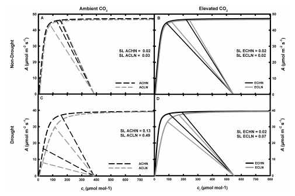
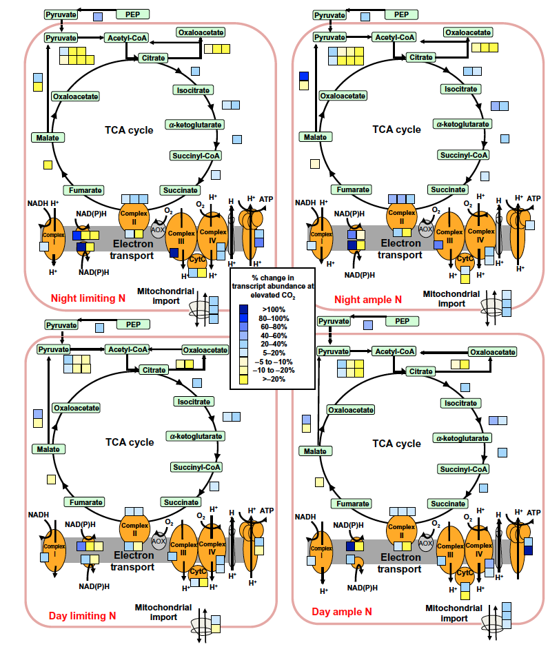
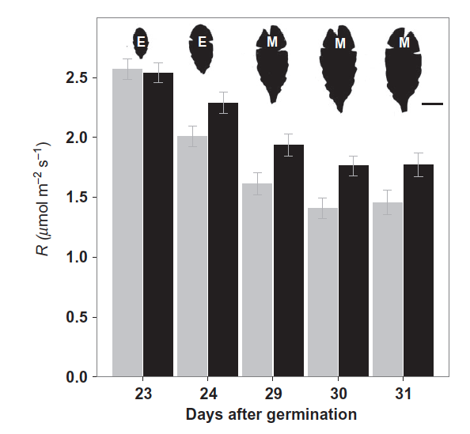

PhD Projects
PhD Dissertation Projects
During graduate school I was interested in doing a mixture of field, molecular, computational, and engineering projects. Thanks in part to the freedom afforded by a NSF Graduate Research Fellowship, I designed research projects to answer open questions in the climate change literature that incorporated these four components. Here is a copy of my dissertation.
Abstract
The balance between photosynthetic carbon dioxide (CO2) assimilation and respiratory CO2 release influence plant growth, crop yields, and the ability of terrestrial ecosystems to offset ~2-3 Gt CO2 yr -1 of anthropogenic emissions. Rising atmospheric CO2 concentration ([CO2]) this century will impact plant photosynthesis and respiration with consequences for plant productivity in natural and agro-ecosystems. The capacity of all plants to grow and ecosystems to store carbon in elevated [CO2] can be dependent on interactions with water, nutrients, and plant developmental processes. The purpose of this thesis is to address fundamental knowledge gaps in understanding plant responses to the interaction between elevated [CO2] with water, nitrogen (N), and leaf developmental programs: (1) determine what is the mechanistic response of maize C4 photosynthesis to a three way interaction between atmospheric [CO2], N availability and drought utilizing the unique capabilities of a Free Air CO2 Enrichment (FACE) field experiment; (2) determine the transcriptional reprogramming of leaf respiration in response to growth in elevated [CO2] and variable N supply using Arabidopsis thaliana and a custom built gas exchange system; (3) determine when in leaf development the transcriptional reprogramming of respiration occurs in response to elevated [CO2] by studying the detailed developmental timelines and molecular events of leaf growth in A. thaliana. The knowledge gaps addressed in this work will help inform crop improvement and models that predict future ecosystem function and global food supply in the face of a changing climate.
Elevated [CO2], Nitrogen Availability, and Drought in Maize
C4 plants, like maize, make up some of the most valued crops and important keystone species in subtropical grassland ecosystems. In C4 plants, CO2 is converted into a four carbon acid and pumped from the mesophyll cells into the bundle sheath cells where it is re-released near the site of RUBISCO. This mechanism makes C4 photosynthesis an efficient way for the plants to fix carbon used in growth processes. C4 plants are theoretically not suppose to have a stimulation in photosynthetic carbon assimilation when grown in elevated [CO2] because of this CO2 concentrating mechanism. In this paper I designed a field experiment to test the interaction of elevated [CO2] and nitrogen availability on maize growth, carbon assimilation and development. I found that elevated [CO2] did not provide a benefit to carbon assimilation or growth in either nitrogen treatment early in the field season. A late season drought allowed me to test what the effects of water availability had on these interactions. By merging the field data with a model of C4 photosynthesis I showed that drought made photosynthetic capacity sensitive to elevated [CO2] and that low nitrogen availability exaggerated this difference. paper

FIGURE 1: Photosynthetic modeling combining field and lab gas exchange data showing CO2 by nitrogen interaction only in drought conditions. Summary of A/ci response curves and CO2 supply functions for maize grown at ambient [CO2] (Panels A and C, dashed lines) and elevated [CO2] (Panels B and D, solid lines) as well as high N (black lines) and limiting N (grey lines) during non-drought conditions (panels A and B) or drought conditions (panels C and D). Stomatal limitation (SL) to carbon assimilation was also calculated for each treatment.
Elevated [CO2], Nitrogen Availability, and Respiration- in Arabidopsis thaliana
Plant respiration is a very important component of plant growth and global carbon cycle, but less studied compared to photosynthesis. This is especially true for night-time dark respiration. There was a great deal of confusion in the literature about whether growth in elevated [CO2] would increase, decrease, or not change the dark respiration rates of plants. After conducting a literature review on the topic I found that various papers were not consistent in how they quantified respiration and there appeared to be evidence for an interaction between elevated [CO2] and nitrogen availability on plant respiration. I wanted to understand the molecular mechanisms of this interaction so I chose to work with Arabidopsis thaliana because of the suite of molecular and genetic tools available. The problem with using A. thaliana was that there was no standard equipment to measure leaf respiration in a plant this small so I designed a custom respiration system (see below) in order to very accurately quantify leaf respiratory CO2 efflux. This new chamber, allowed me show that the elevated [CO2] did stimulate leaf respiration regardless of nitrogen availability, but the response was dampened in the limiting nitrogen condition. This finding was supported biochemically and from gene expression micro-array data. paper

FIGURE 2: Molecular support for biochemical and physiological increase in respiration in elevated [CO2]. This figure is a graphical summary of genes encoding components of the TCA cycle and mitochondrial electron transport chain that responded to elevated [CO2] during midnight (top) or midday (bottom) and limiting N (left) or ample N (right). Each blue (positive percentage change) and yellow (negative percentage change) represents the mean percentage change of a unique transcript that responded significantly (P < 0.05) to elevated [CO2].
Elevated [CO2], Leaf Development, and Respiration in Arabidopsis thaliana
As leaves develop they gradually transition from being a sink tissue to a source tissue. Sink tissues rely on transport of carbon and other nutrient resources from mature source tissues in order to maintain high growth rates through this developmental transition. A majority of the elevated [CO2] literature had focused on mature tissues. I was curious if the stimulation in respiration rates that I observed in mature tissues were also occurring in younger tissues. The answer to this question has important implications to how plant respiration is modeled in whole plant growth models. I found that as leaves grew and became source tissues the stimulation in leaf respiration in elevated [CO2] increased. This finding was also supported biochemically and from gene expression data. This developmental gradient in respiratory response makes sense in that the mature tissue is best able to incorporate the CO2 into sugars and that more of that carbohydrate is being respired at night to fuel the whole plant growth stimulation in elevated [CO2]. paper
